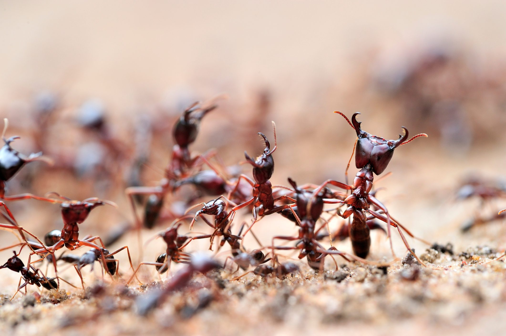
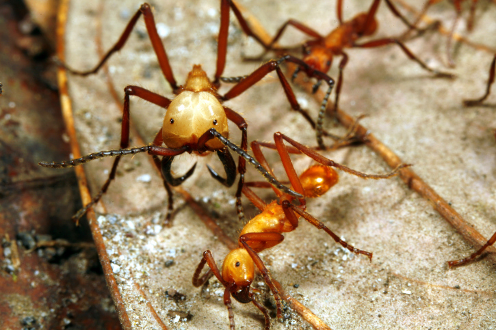

AMAZING ANT FACTS THAT WILL MELT YOUR BRAIN!
Ants are social insects that can be found in almost every part of the world, with over 12,000 species identified to date. They live in highly organized colonies that can range in size from a few dozen to millions of individuals. Each colony typically has a queen who lays eggs and is responsible for the reproduction of the colony, along with numerous worker ants who are responsible for tasks such as gathering food, caring for the young, and defending the colony. Ants communicate with each other using a variety of methods, including chemical signals known as pheromones, visual cues, and even sound.
Look at these COOL ANTS!
Ants are incredibly important to the ecosystem as they play a vital role in the food chain. They act as both predators and prey, and their presence helps to regulate the populations of other insects and animals in their environment. Ants are also known for their ability to aerate and fertilize soil, which is beneficial for plant growth. Additionally, some species of ants are used in agriculture, as they can help to control pests and pollinate crops. Despite their small size, ants are a crucial part of the natural world and their behaviors and interactions provide scientists with valuable insights into the workings of social systems.
